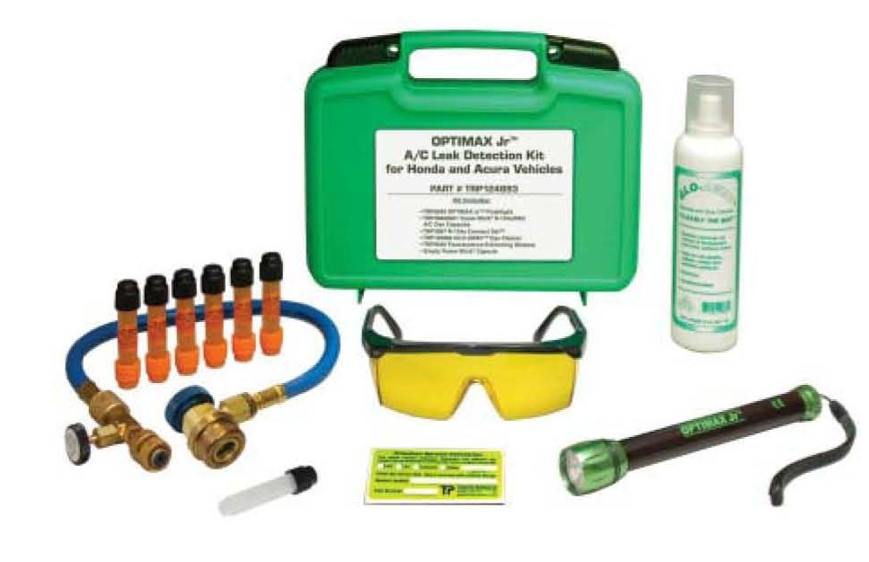
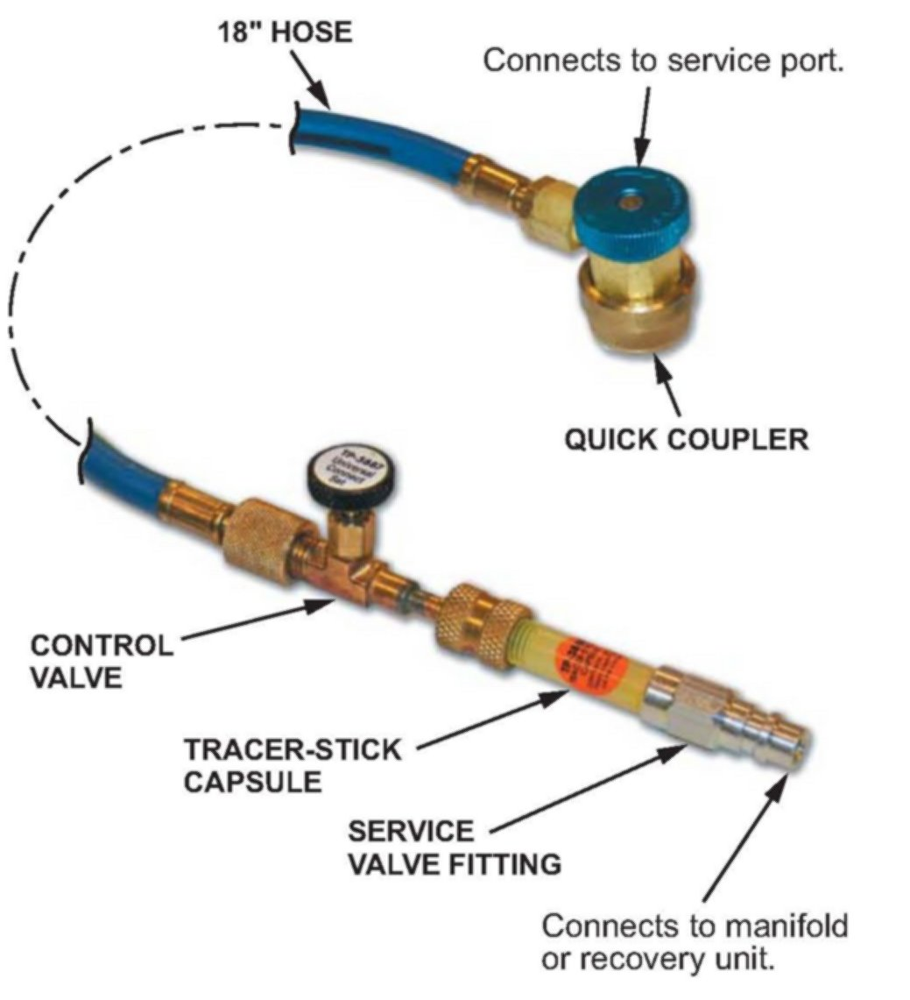

A/C - Refrigerant Leak Detection
07-025October 12, 2007
Applies To:
ALL Vehicles With Conventional A/C Compressors
A/C Leak Detection
(Supersedes 07-025, dated June 15, 2007, to update the information marked by asterisks)
The OPTIMAX Jr.(TM) A/C Leak Detection Kit for Acura vehicles, P/N TRP124893, is a new required tool. The kit is used to add small amounts of dye to A/C systems to help locate smaller leaks that an electronic leak detector might not find.
When searching for leaks, always begin by using an electronic leak detector. Refer to Service Bulletin 97-013, Denso HLD-100 Halogen Leak Detector, for tips on using this tool, then follow up with the OPTIMAX Jr.
This new detection kit complements, but does not replace the electronic detector.

The kit contains:
^ TRP8640CS, OPTIMAX Jr. (TM) cordless, fluorescent leak detection flashlight lamp (includes 3 standard AA batteries)
^ TRP38600601, (6) 0.06 oz. (1.7 g) Tracer-Stick(R) R134a/PAG A/C dye capsules with ID labels
^ TRP3887, R-134a Universal Connect Set(TM)
^ TRP120884, GLO-AWAY(TM) dye cleaner
^ TRP9940, fluorescence-enhancing glasses
^ TRP1143, (1) empty Tracer-Stick dye capsule
ORDERING INFO
*One OPTIMAX Jr. A/C Leak Detection Kit was shipped to each current dealer as a required special tool. Additional kits and replacement capsules may be ordered through the Acura Tool and Equipment Program. On the IN, click on Service, Service Bay, Tool and Equipment Program, Online Catalog tab, and Air Conditioning Equipment.*
NOTICE
^ Only Tracer-Stick single-dose fluorescent dye capsules from Tracer Products (Tracerline(R) are approved for use in Acura vehicles. Other dyes contain solvents that may contaminate the system's refrigerant oil, leading to component failure.
^ Adding excessive amounts of dye can lead to compressor damage and failure.
USING THE OPTIMAX JR.
1. Before adding any leak-detection dye, check to see if there is dye in the system now.
^ Check for a label in the engine compartment indicating that fluorescent leak-detection dye has been added to the system.
^ Dye may have been added even though no label is present. To confirm this:
-116GPut on the fluorescence-enhancing glasses, and remove the low-side service port sealing cap.
- Direct the ultraviolet lamp into the valve stem area. If dye has been previously added, the lubricant traces will have a bright yellow fluorescent glow. You may need to press the port's valve stem briefly to release some lubricant and dye from the system.
^ If there is no dye in the system, go to step 2.
^ If there is dye in the system, go to step 5. Do not add more dye.
2. Add the dye.
NOTE:
Air and moisture must be evacuated from the universal connect set if this is being used for the first time, or if it has been stored with the control valve open. If the air and moisture have been evacuated, go to step 3; otherwise do the following:
(a) Attach the empty dye capsule (provided in the dye kit) to the control valve fitting.
(b) Attach the service valve fitting (provided in the kit) to the empty dye capsule.
(c) Attach the low-side hose of the A/C recovery and charging station, and open the quick coupler's hand-wheel valve. Then open the control valve (black knob) on the universal connect set.
(d) Following the manufacturer's instructions for your recovery and charging station, evacuate the universal connect set for approximately 3 minutes.
(e) When evacuation is complete, be sure the set's control valve is closed (finger tight), and disconnect the NC recovery and charging station.
(f) Remove the service valve fitting and the empty dye capsule from the set, and store them for future use.
NOTE:
^ Check the refrigerant charge level. There must be enough refrigerant in the system to operate the NC compressor and to circulate refrigerant oil.
^ If the refrigerant charge is too low, recover the remaining amount and recharge the system before adding any dye.
(g) Start the vehicle, and operate the A/C system. Follow your A/C refrigerant recovery and charging station's operating instructions for low-side charging to install the dye.
* NOTE:
Only 0.05 lb (0.02 kg) of refrigerant is needed to push the dye into the A/C system.*
(h) Once the refrigerant charge is programmed, open the control valve on the set to allow the dye to enter the system.
(i) After the dye capsule clears, allow the low side of the A/C system to reach its lowest operating pressure, then quickly close both the service equipment's low-side coupler valve and the control valve on the set.
(j) Remove the set from the vehicle by releasing its quick coupler. Remove the empty dye capsule from the service valve fitting. Return the hose, control valve, and service-valve fitting to the storage case.
* NOTE:
Store the hose with the control valve closed. This will retain a small amount of refrigerant in the hose so it does not have to be evacuated the next time you use it.*
(k) Fill out an identification label (provided in the kit), and attach it to a location near the A/C charge label.

3. Connect the universal connect set and the Tracer-Stick dye capsule:
(a) Be sure the quick coupler and control valves on the set are closed.
(b) Remove the low-side service port sealing cap, and connect the set to the low-side service port using the quick coupler.
(c) Hold a new dye capsule so that the embossed arrow is pointing up. Remove the black end cap, and carefully attach the capsule to the control valve fitting.
NOTE:
The capsule must be held with the embossed arrow pointing up or the dye will leak out of the capsule.
(d) Turn the capsule so the embossed arrow is pointing down. Remove the orange end cap, and carefully attach the service valve fitting provided in the kit (finger tight).
NOTE:
The capsule must be held with the embossed arrow pointing down or the dye will leak out.
4. Connect the A/C service equipment:
With the universal connect set and dye capsule attached to the vehicle's low-side service port, connect the A/C refrigerant recovery and charging station's low-side hose quick-coupler to the service valve fitting. Open the blue hand-wheel valves on both quick couplers. Leave the control valve (black knob) on the universal connect set closed.
NOTE:
* ^ If you have recovered refrigerant to weigh it as part of your diagnostics, or if there is a low charge, it is more efficient to recharge the system using normal procedures before installing the universal connect set. Dye can then be added using approximately 0.05 lb (0.02 kg) of refrigerant.*
^ You do not need to connect the service equipment's high-side hose to the vehicle to install the dye. If the high-side hose is connected, make sure its coupler valve is closed before proceeding.
^ Do not use the A/C recovery and charging station to recover or evacuate the A/C system when a full dye capsule is attached. The dye will be drawn into the service equipment instead of being added to the vehicle's A/C system.
5. Inspect the A/C system for leaks:
(a) Run the A/C system for at least 15 minutes to circulate the dye through the system. Large leaks will be seen immediately as a fluorescent yellow glow. Smaller leaks may require at least 24 hours of vehicle operation before they become visible. Operate the A/C system as much as possible during this time to keep the dye circulating.
(b) Stop the vehicle's engine, and inspect the system for leaks using the ultraviolet (UV) lamp and fluorescence-enhancing glasses from the kit. Low ambient light conditions (a dark work area) will aid in locating the leak.
NOTE:
Not all UV lamps work well with all types of fluorescent dye. Use only the lamp provided in the kit to inspect for leaks.
(c) Inspect the entire system. Be sure to check these locations:
^ damaged and corroded areas
^ fittings
^ hose-to-line couplings
^ refrigerant controls
^ service ports
^ brazed or welded areas
^ areas near attachment points
(d) Check for evaporator leaks by illuminating the evaporator drain tube area with the UV lamp and glasses. Remove the dust and pollen filter, if equipped, and inspect the areas around the front evaporator and expansion valve.
(e) After repairing a leak, remove any fluorescent residue using the GLO-AWAY dye cleaner from the kit and hot water (follow the instructions on the bottle).

Disclaimer